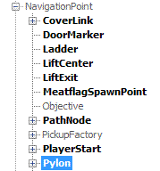
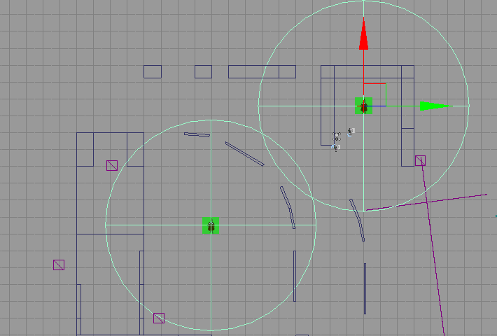
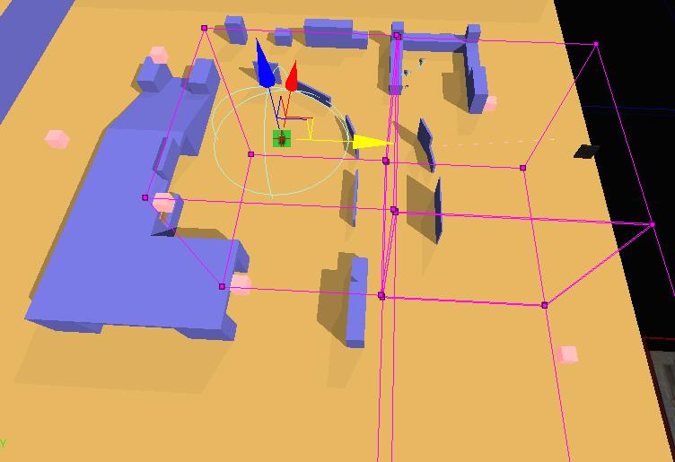
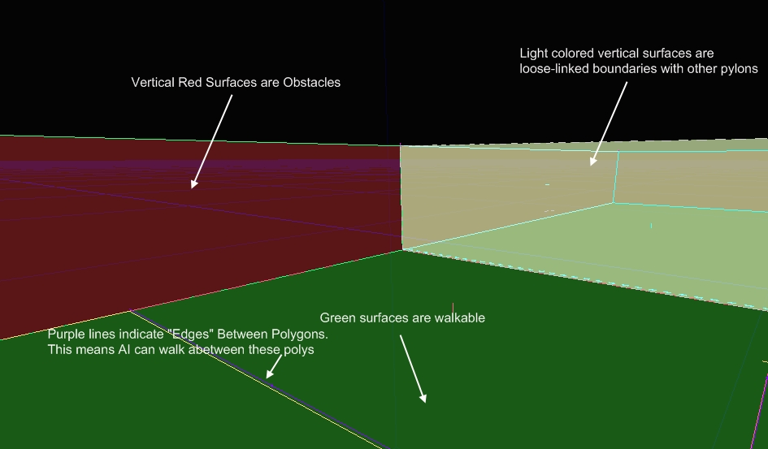

UDN
Search public documentation:
UsingNavigationMeshesJP
English Translation
中国翻译
한국어
Interested in the Unreal Engine?
Visit the Unreal Technology site.
Looking for jobs and company info?
Check out the Epic games site.
Questions about support via UDN?
Contact the UDN Staff
中国翻译
한국어
Interested in the Unreal Engine?
Visit the Unreal Technology site.
Looking for jobs and company info?
Check out the Epic games site.
Questions about support via UDN?
Contact the UDN Staff
ナビゲーション メッシュの使用
ドキュメント概要: ナビゲーション メッシュを作成してレベルに追加する簡単な説明。 ドキュメントの変更ログ: Matt Tonks により作成。概観
このドキュメントの目的は、ナビゲーション メッシュをレベルに追加する方法を簡単に紹介することです。プロセスは非常に単純で、もっとも複雑な部分はメッシュをどのように分割するかを決定する部分でしょう。Pylon (パイロン)

全体のプロセスは、Pylon (パイロン) という特別なタイプのアクタをレベルに配置することから成り立ちます。このパイロンは、2 つのことを行います。まずは、自動生成システムに探索をどこから始めるか (これが、探索シード ポイントです) の通知をします。次に、このパイロンのためにどこまで探索を進めるかを自動システムに通知します。 例えば、以下のスクリーンショットで、パイロンはマップの中心に配置されていて、探索することのできる小さな範囲が与えられています。 ここで覚えておかなければいけない重要なことは、この 1 つのパイロンは AI が歩行可能なスペース全体を表現するわけではないということです。これは、単なる歩行可能なスペース内の島です。実際のレベルは、すべてがリンクし合うようないくつかのパイロンから成り立ちます。各パイロンの生成されたメッシュは、そのパイロン内に保存されるので、このようにメッシュを分割することで、メッシュのどの部分が特定の時間にストリームイン/アウトするかをコントロールすることができます。
ここで覚えておかなければいけない重要なことは、この 1 つのパイロンは AI が歩行可能なスペース全体を表現するわけではないということです。これは、単なる歩行可能なスペース内の島です。実際のレベルは、すべてがリンクし合うようないくつかのパイロンから成り立ちます。各パイロンの生成されたメッシュは、そのパイロン内に保存されるので、このようにメッシュを分割することで、メッシュのどの部分が特定の時間にストリームイン/アウトするかをコントロールすることができます。
パイロンをリンクする
パイロンをお互いにリンクさせることは、非常に簡単です。リンクさせたいパイロンの探索エリアが少しばかり重複するようにするだけで問題ありません。例えば、以下では 2 つのパイロンの拡張範囲が微妙に重複しています。
これは、2 つの球の間の重複するラインに沿ってリンクされる 2 つのメッシュとなります。以下が、結果となるメッシュのスクリーンショットです。 2 つのパイロンの間のインターフェースに沿った黄緑色の垂直のサーフェスに注目してください。これは、2 つのパイロンがお互いに緩くリンクしていることを示しています。(緩くリンクしているというのは、もし両方のパイロンが読み込まれると、AI はこれらの間を歩くことができるということです。)
2 つのパイロンの間のインターフェースに沿った黄緑色の垂直のサーフェスに注目してください。これは、2 つのパイロンがお互いに緩くリンクしていることを示しています。(緩くリンクしているというのは、もし両方のパイロンが読み込まれると、AI はこれらの間を歩くことができるということです。)
他のパイロン内のパイロンに関して
1 つのパイロンを、もう 1 つのパイロン拡張エリア内に置くことはまったく問題ありません。どうなるかと言うと、小さいほうのパイロンが先にビルドされ、大きいほうのパイロンが小さいパイロンの周りにビルドされ、適切にリンクされます。*しかしながら*、両方が完全にお互いの中に入ってしまうような 2 つのパイロンには問題があることを覚えておいてください。これは、写真で説明するほうが分かりやすいでしょう。 これは、コンピュータを溶かしてしまうようなことはありませんが、この場合のパイロンの 1 つは単純にビルドされないので、期待しているようなメッシュを得ることができないことがあります。
これは、コンピュータを溶かしてしまうようなことはありませんが、この場合のパイロンの 1 つは単純にビルドされないので、期待しているようなメッシュを得ることができないことがあります。
パイロンの拡張エリアの設定
パイロンの境界を設定する方法は 2 つあります。デフォルトであり、もっとも単純な方法は半径です。最初にパイロンをレベルに配置する際に、ポイント ライトのように球体が周りに描かれるのが分かると思います。この球体の中が、パイロンが探索をする場所となります。 もう ‚P つの方法は、拡張するボリュームのリストをパイロンに与えることです。この方法は、もう少し複雑ですが、よりコントロールを得ることができます。これをセットアップするには、パイロンを選択して、プロパティ ウィンドウで手動でボリュームをリストに挿入するか、またはクリエイティブな方法があります。クリエイティブな方法とは、パイロンを選択し、中を探索させたいボリュームのすべてを選択し、[Ctrl] + [Shift] + [L] を押します。これで、パイロンが、選択したすべてのボリュームをそのリストに追加します。
すべてのボリュームとパイロンが選択されています。
もう ‚P つの方法は、拡張するボリュームのリストをパイロンに与えることです。この方法は、もう少し複雑ですが、よりコントロールを得ることができます。これをセットアップするには、パイロンを選択して、プロパティ ウィンドウで手動でボリュームをリストに挿入するか、またはクリエイティブな方法があります。クリエイティブな方法とは、パイロンを選択し、中を探索させたいボリュームのすべてを選択し、[Ctrl] + [Shift] + [L] を押します。これで、パイロンが、選択したすべてのボリュームをそのリストに追加します。
すべてのボリュームとパイロンが選択されています。

すべてのボリュームはパイロンにリンクされています。 (パイロンが選択されていると、リンクされているすべてのボリュームは半透明に描かれ、パイロンをボリュームにリンクする黄色のラインが描かれます。これは、そのパイロンがどのボリュームにリンクされているかを見る手助けをするためにあります。) また、パイロンからボリュームのリンクを外すには、パイロンとリンクを外したいボリュームを選択して、[Ctrl] + [Shift] + [L] を押します。すると、そのパイロンへのリンクがトグルされます。(また、そのパイロンのアクタ プロパティ内の ExpansionVolumes リストから、ボリュームを削除することもできます。)
また、パイロンからボリュームのリンクを外すには、パイロンとリンクを外したいボリュームを選択して、[Ctrl] + [Shift] + [L] を押します。すると、そのパイロンへのリンクがトグルされます。(また、そのパイロンのアクタ プロパティ内の ExpansionVolumes リストから、ボリュームを削除することもできます。)
動的パイロン
 動的パイロンは、動くことのできるパイロンです。これは、AI が乗ったり降りたりすることのできるようなリフトや動くプラットフォームに便利です。例えば、以下ではプラットフォームを例としてあげます。
動的パイロンは、動くことのできるパイロンです。これは、AI が乗ったり降りたりすることのできるようなリフトや動くプラットフォームに便利です。例えば、以下ではプラットフォームを例としてあげます。
 このプラットフォームの動的パイロンは、その半径内にメッシュをビルドしますが、重要なことは、メッシュは Dynamic Pylon (動的パイロン) に関連しているということです。この Dynamic Pylon (動的パイロン) は、動くプラットフォームにアタッチされています。これは、プラットフォームが動くと同時にメッシュも動くということです。
このプラットフォームの動的パイロンは、その半径内にメッシュをビルドしますが、重要なことは、メッシュは Dynamic Pylon (動的パイロン) に関連しているということです。この Dynamic Pylon (動的パイロン) は、動くプラットフォームにアタッチされています。これは、プラットフォームが動くと同時にメッシュも動くということです。
 プラットフォームの動きが止まると、動的パイロンはそのエリアのメッシュの残りの部分に自動的にリンクします。
プラットフォームの動きが止まると、動的パイロンはそのエリアのメッシュの残りの部分に自動的にリンクします。
 (パイロンを交差するエッジを示している赤の点線に注目してください。)
動的パイロンに関して覚えておかなければいけないもっとも重要なことは、動的パイロンにビルドされるメッシュのいかなる部分もパイロンと一緒に動くということです。従って、動的パイロンを拡張させる場所には気を配るようにしてください。
以上で終了です。これで、メッシュをレベルに追加する準備ができました。
以下は、デバッグ描写とそれの意味に関する情報です。
(パイロンを交差するエッジを示している赤の点線に注目してください。)
動的パイロンに関して覚えておかなければいけないもっとも重要なことは、動的パイロンにビルドされるメッシュのいかなる部分もパイロンと一緒に動くということです。従って、動的パイロンを拡張させる場所には気を配るようにしてください。
以上で終了です。これで、メッシュをレベルに追加する準備ができました。
以下は、デバッグ描写とそれの意味に関する情報です。
デバッグ描写
